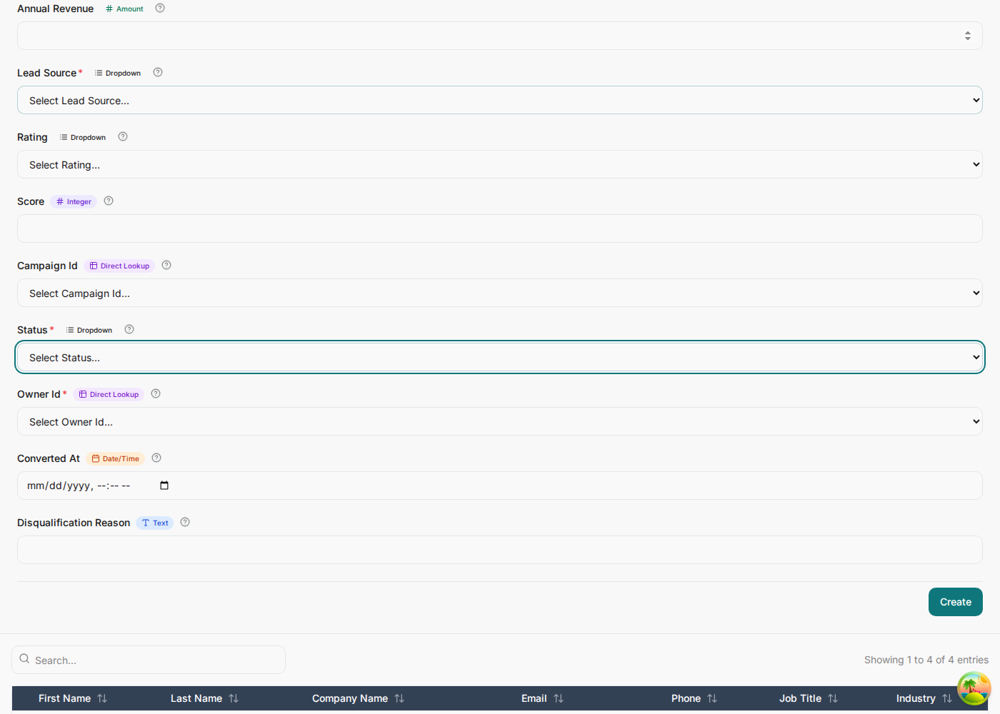

The data model
The model's entities and relationships are the foundation: it decides your tables, your API, your forms and
your grids. Everything in later chapters attaches to something you name here, so it is worth getting the
names right before you write a single rule.
The shape of a model file
One YAML document, read top to bottom. Each top-level key is one part of the application —
enums, categories, entities, relationships,
rules, stateMachines, sagas, rbac and the rest — and
language/yaml/eml.schema.json says exactly which keys each one takes.
eml: "1.0"
name: Enterprise CRM
version: 1.0.0
enums:
- name: LeadStatus
values: [new, working, nurturing, qualified, converted, disqualified]
categories:
- name: Sales Pipeline
icon: TrendingUp
entities: [Opportunity, Product]
entities:
- name: Lead
audited: true
attributes:
- { name: id, type: string, pk: true }
...
- { name: status, type: string, enum: LeadStatus }
indexes:
- columns: [owner_id, status]
relationships:
- { from: Campaign, fromCardinality: exactly-one, to: Lead, toCardinality: zero-or-more, label: generates }
rules:
- name: leadScoring
entity: Lead
event: beforeCreate
priority: 10
nodes: ...
edges: ...The diagrams — the ERD, each rule's decision graph, each lifecycle — are drawn from this document by the model viewer and the designer. Nothing reads a drawing back: the YAML is the one thing every generator, checker and viewer compiles, so there is nothing for a picture to disagree with.
Entities and attributes
An entity is a table. Each entry under attributes is a column: its name, its
type, and the flags that say what else it is.
- name: Lead
audited: true
attributes:
- { name: id, type: string, pk: true }
- { name: first_name, type: string }
- { name: last_name, type: string }
- { name: company_name, type: string }
- { name: email, type: email }
- { name: phone, type: phone, optional: true }
- { name: job_title, type: string, optional: true }
- { name: industry, type: string, optional: true, enum: Industry }
- { name: employee_count, type: integer, optional: true }
- { name: annual_revenue, type: decimal, optional: true }
- { name: lead_source, type: string, enum: LeadSource }
- { name: rating, type: string, optional: true, enum: LeadRating }
- { name: score, type: integer, optional: true, min: 0, max: 100 }
- { name: campaign_id, type: string, fk: true, optional: true }
- { name: status, type: string, enum: LeadStatus }
- { name: owner_id, type: string, fk: true }
- { name: converted_at, type: datetime, optional: true }
- { name: disqualification_reason, type: string, optional: true }Types
Eight canonical types — string, text, integer,
decimal, boolean, date, datetime, json —
plus aliases that normalize to one of them while carrying intent. email is a
string that renders as an email input; phone, url,
password and money behave the same way. Use the alias when it says something
true; nothing breaks if you use the base type instead.
Modifiers
| Flag | Meaning | Watch out for |
|---|---|---|
pk: true | Primary key. Every entity gets a string id key if you omit one. | — |
fk: true | Foreign key. The column name decides what it points at. | See below — this is the one that catches people. |
unique: true | Unique. Emits a unique index. | Unique and required means the caller must always supply it. |
optional: true | Nullable. Everything is required by default. | A required column the caller cannot know yet — a number a hook mints — has to be optional, or the insert fails before the hook runs. |
Foreign keys resolve by name
There is no syntax for "this column points at that table". The generator derives it from the column name, so the name has to carry the reference:
account_id→ theAccountentity.sla_policy_id→SlaPolicy.owner_id,manager_id,user_id, and anything ending_byor_by_id→ the user entity. A person named by the role they played is still a user; there is nobus_approved_bytable.- Anything that resolves to nothing is stored as a plain string: no lookup, no display name, a raw UUID in your grids.
{ name: assigned_to, type: string, fk: true } looks fine and quietly does the wrong thing — it does not end in
_id, so the checker flags EML114 and the column renders as raw text.
Either use a name the resolver knows (owner_id, escalated_by_id) or accept
that you are storing an opaque string.
Relationships
Each relationship names both ends and a cardinality for each — exactly-one,
zero-or-one, zero-or-more or one-or-more. The label becomes the
relationship's name; the two cardinalities decide which side carries the foreign key.
- { from: Account, fromCardinality: exactly-one, to: Contact, toCardinality: zero-or-more, label: employs }
- { from: Account, fromCardinality: exactly-one, to: Opportunity, toCardinality: zero-or-more, label: has pipeline }
- { from: Opportunity, fromCardinality: exactly-one, to: OpportunityLineItem, toCardinality: zero-or-more, label: contains }
- { from: Opportunity, fromCardinality: exactly-one, to: Quote, toCardinality: zero-or-more, label: is priced by }
- { from: Quote, fromCardinality: exactly-one, to: Contract, toCardinality: zero-or-more, label: becomes }
- { from: SlaPolicy, fromCardinality: exactly-one, to: SupportCase, toCardinality: zero-or-more, label: applies to }
- { from: User, fromCardinality: exactly-one, to: Opportunity, toCardinality: zero-or-more, label: owns }
Declare a relationship for every foreign key you write, including the ownership ones back to
User. The checker reports the gap as EML502, and the generated application
uses the relationship to build lookups, child panels and the sentence in each window's help text.

Enums: closed vocabularies
Declare the values once, then bind columns to them. This is what turns a status column from a text box into a dropdown, so it matters more than it looks.
enums:
- name: LeadStatus
values: [new, working, nurturing, qualified, converted, disqualified]
- name: LeadRating
values: [hot, warm, cold]
- name: CasePriority
values: [low, medium, high, critical]
# on the column, under its entity's attributes
- { name: status, type: string, enum: LeadStatus } # Lead
- { name: rating, type: string, optional: true, enum: LeadRating }
- { name: priority, type: string, enum: CasePriority } # SupportCase
Use closed_won, not "Closed Won". The raw value is what every rule, workflow and state
machine compares; the application derives the display label from it (closed_won →
"Closed Won"). Change the label in the dictionary, keep the value stable.
Match the state machine exactly
If an entity has a lifecycle, its status enum and its state machine must carry the same set of values. The checker compares them and reports a state missing from the enum (EML426) or an enum value no state uses (EML427). Two lists that drift apart are the classic way a status ends up unreachable.
Indexes
unique: true on a column gets you a single-column unique index for free. Anything composite — the pairs your lists
actually filter and sort by — has to be asked for.
- name: Account
indexes:
- columns: [territory_id, status]
- name: Lead
indexes:
- columns: [owner_id, status]
- name: Opportunity
indexes:
- columns: [account_id, stage]
- columns: [owner_id, expected_close_date]
- name: SupportCase
indexes:
- columns: [owner_id, priority]
- name: Activity
indexes:
- columns: [owner_id, due_at]
Pick them from the questions the application asks: "my open opportunities by close date" is
[owner_id, expected_close_date] on Opportunity. The column order matters — leading column first.
Grouping the dashboard
categories decides how the home screen is organised. Without it every entity lands in one
undifferentiated "General" block, which is survivable at five entities and unusable at seventeen.
categories:
- name: Sales Pipeline
description: Opportunities and the products sold
icon: TrendingUp
color: "#0ea5e9"
entities: [Opportunity, Product]
- name: Customer Service
description: Support cases and the service levels that govern them
icon: LifeBuoy
color: "#f59e0b"
entities: [SupportCase, SlaPolicy]
- name: People and Teams
description: Users, selling teams and organisational structure
icon: Users
color: "#64748b"
default: true
entities: [User, Team]
Only name is required. A colour is quoted, because an unquoted # starts a YAML comment. default: true
marks the category that catches anything you forgot to assign — at most one document may declare it.
The description is rendered under the group heading, so write it for the person using the
application, not for yourself.
Entity-level metadata
- name: Account
audited: true # every change recorded in the audit log
- name: Activity
softDelete: true # deletes stamp deleted_at instead of removing
- name: Product
label: Product CatalogueCheck before you go further
The checker reads the whole document — its YAML, the schema, then the language definition — and reports errors, warnings and informational notes at the YAML line they concern, with fixes. Run it while you write, not at the end.
$ bun language/cli/eml.ts validate -i language/yaml/examples/crm.eml.yaml
Validating language/yaml/examples/crm.eml.yaml
no issues
0 errors, 0 warning(s)Errors stop generation. Warnings are things that will bite later — an FK that will not resolve, a state nothing can reach, a decision node with one branch. The infos are usually a missing relationship behind a foreign key you did declare. A model worth generating from reports nothing at all.